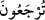

görmek ve yaptıklarınızın karşılığını görmek üzere Allah Teâlâ’nın huzuruna
“döndürüleceksiniz.”
Burada sözün yönünün değiştirilmesi (iltifât), korkutmada mübâlağa içindir. “__WORD__
kelimesi, “__WORD__ (döndürülecekler)” diye de okunmuştur. Çoğul olması “__WORD__ (mahlûkât,
insanlar)” kelimesinin mânâsı bakımındandır.
12. Kıyâmetin kopacağı gün, günahkârlar (ümitsizlik içinde) susacaklardır.
Mahlukâtın tekrar diriltilip yaptıklarının karşılığının verilmesi O’na döndürülme vakti
olan “Kıyâmetin kopacağı gün, günahkârlar” delil getiremeyen, şaşkın ve delil
bulmaktan veya bütün hayırlardan ümidini kesen kimsenin sustuğu gibi “susacaklardır.”
“__WORD__, zamanın dilimlerinden bir parçadır. Kıyâmet günündeki hesabının çabukluğu
sebebiyle kıyâmet saate benzetilerek bu kelime ile ifâde edilmiştir. Nitekim Allah Teâlâ
“O, hesap görenlerin en çabuğudur.” (el-En‘âm, 6/62) buyurmuş ve “Onlar
vaadedildikleri azabı gördükleri gün sanki dünyâda sadece gündüzün bir saati
kadar kaldıklarını sanırlar.” (el-Ahkâf, 46/35) âyetiyle bu hususa dikkat çekmiştir.
Râğıb der ki: “__WORD__, ümitsizliğin fazlalığından meydana gelen üzüntüdür. “İblîs”
kelimesi de buradan türemiştir. Çok ümidsiz olan kişi çoğu zaman sustuğu ve kendisine
yardım edecek şeyleri unuttuğundan bir kimse sustuğu ve ileri sürecek delili kalmadığı
zaman “__WORD__ denir.
13. (Allâh’a koştukları) ortaklarından kendilerine hiçbir şefaatçı çıkmayacaktır.
Zaten onlar, ortaklarını da inkâr edeceklerdir.
“(Allâh’a koştukları) ortaklarından” şefâat umuduyla taptıkları putlarından,
“kendilerini” Allâh’ın azabından kurtaracak “hiçbir şefaatçı çıkmayacaktır.” Bu
ifâdenin âyette mâzî/geçmiş zaman lafzıyla gelmesi, bu hususun Allâh’ın ilminde kesin
olmasından dolayıdır.
“Zaten onlar, ortaklarını da” kendilerinden ümid kestikleri için ilâhlarını da “inkâr
edeceklerdir.” İstediklerini elde etme ümidi olmayınca, onlardan bîzar olacaklardır.